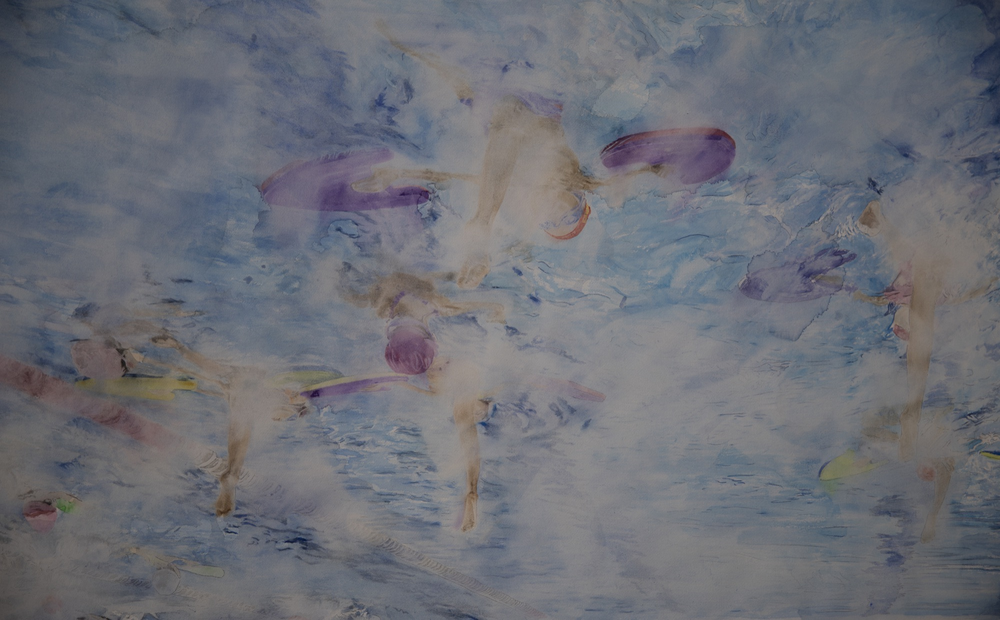

Blue Etude
蓝色练习曲

- Artwork ID / 作品编号
- KW-W-000043
- Year / 年份
- 2021
- Medium / 媒介
- Watercolor on paper / 纸本水彩
- Dimensions / 尺寸
- 76 × 112 cm (H × W / 高 × 宽)
About the work / 作品介绍
Blue Etude was inspired by a moment I observed while accompanying my daughter during a synchronized swimming training session. Bodies moved continuously between the surface and beneath the water, where light, ripples, and movement intertwined to create a rhythmic visual composition. Figures emerge and dissolve naturally as water transforms the boundaries between clarity and ambiguity.The painting records the children's concentration, harmony, and perseverance while exploring the relationship between the human body and water. Through the transparent and fluid language of watercolor, light, water, and movement merge naturally, allowing the rhythm of motion, the breath of the surrounding space, and the innocence and courage found in growth to gradually unfold.
《蓝色练习曲》源于我陪伴女儿进行花样游泳训练时的一次现场观察。训练中的身体在水面与水下不断交替，光线、波纹与动作相互交织，形成富有节奏感的视觉韵律。人物时而清晰，时而隐没，真实与虚幻随着水的流动自然转换。作品记录了孩子们训练时的专注、默契与坚持，也呈现了人与水之间建立的感知关系。水彩透明而流动的语言，使光、水与身体自然交融，让运动中的节奏、空气中的呼吸以及成长过程中的纯真与勇气缓缓显现。